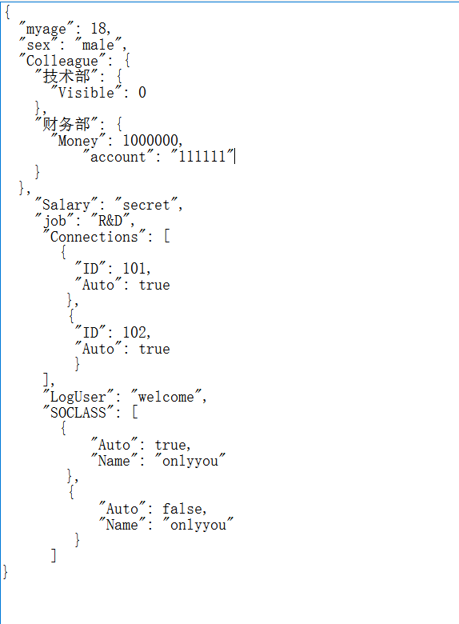

今天花 了点时间来使用 C#读取json文件 ，文件后缀为 .so文件 ，也是基于文件流的形式 获取 对象 ，然后解析;
之所以尝试 使用 json读取 ，是因为其配置文件的格式 更为友好 和方便，直观 且形象，当然 XML也是很方便的;
主要是多了一种读取 配置文件的方式；特记录下来，方便后续项目实际使用；
格式如图：

需要注意的是这种格式需注意编辑；
当然通过代码初始化和写入的话，会自动生成如上的格式的，本文只完成如何读取配置文件的信息；
引用的程序集如:
using System;
using System.Collections.Generic;
using System.ComponentModel;
using System.Data;
using System.Drawing;
using System.Linq;
using System.Text;
using System.Threading.Tasks;
using System.Windows.Forms;
using Newtonsoft.Json;
using System.IO;
using Newtonsoft.Json.Linq;//获取 jobject的对象，及读取键值的方法
class JsonConfigHelper
{
public JObject jObject = null;
public string this[string key]
{
get
{
string str = "";
if (jObject != null)
{
str = GetValue(key);
}
return str;
}
}
public JsonConfigHelper(string path)
{
jObject = new JObject();
using (System.IO.StreamReader file = System.IO.File.OpenText(path))
{
using (JsonTextReader reader = new JsonTextReader(file))
{
jObject = JObject.Load(reader);
}
};
}
public T GetValue<T>(string key) where T : class
{
return JsonConvert.DeserializeObject<T>(jObject.SelectToken(key).ToString());
}
public string GetValue(string key)
{
return Regex.Replace((jObject.SelectToken(key).ToString()), @"\s", "");
}
}
读取不同格式的键的内容的方法:
try
{
JObject myjobj;
JsonConfigHelper helper = new JsonConfigHelper(filepath);
myjobj = helper.jObject as JObject;//获取Jobject对象
int i = myjobj.Count; //当前对象的节点的数量
string str5 = (string)myjobj["sex"];//直接读取当前键值
MessageBox.Show(str5);
JObject myjobj666;
myjobj666 = myjobj["Colleague"]["财务部"] as JObject;//当前节点下的子节点作为jobject对象
//实际测试过程中会异常报错未实例化,这是因为配件文件的保存格式问题,UTF-8
string str3 = (string)myjobj666["account"];
MessageBox.Show(str3);
string str1 = helper["SOCLASS[0].Name"];//
MessageBox.Show(str1);
JToken jken = myjobj["SOCLASS"];//键对象["SO"]内存在多组数据，读取的格式
foreach (JObject myobject in jken)
{
string strr = (string)myobject["Name"];//读取每组节点下的某个键值的数据
MessageBox.Show(strr);
}
if (myjobj.ContainsKey("SOCLASS")) //判断jobject对象中是否存在"SO"这个键对象
{
MessageBox.Show("done");
}
}
catch (Exception ex)
{
MessageBox.Show(ex.Message);
}